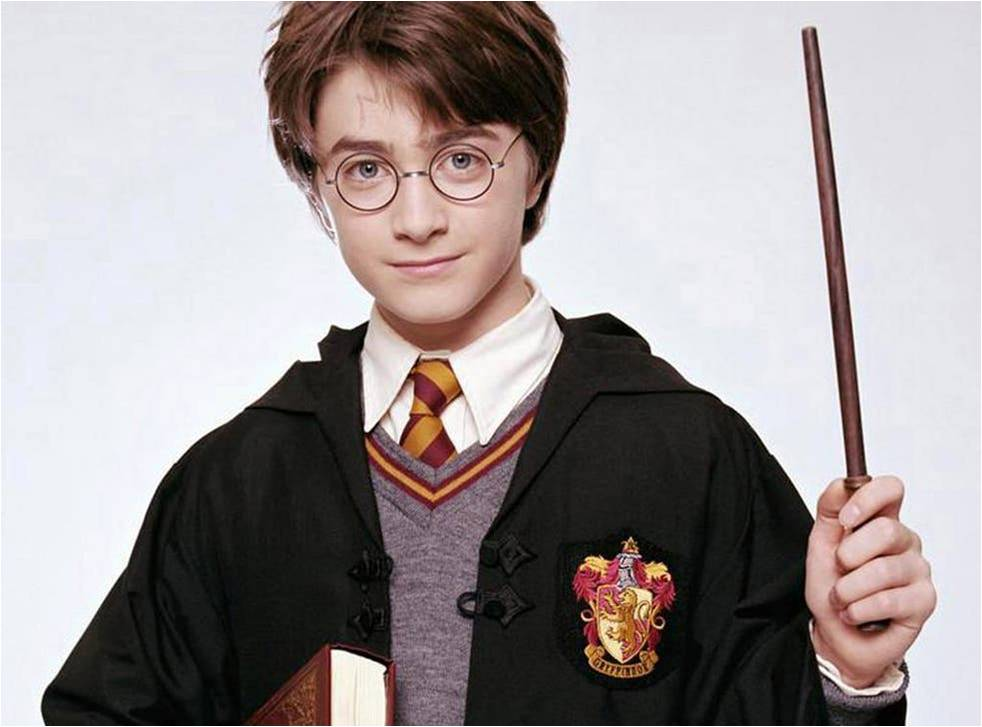
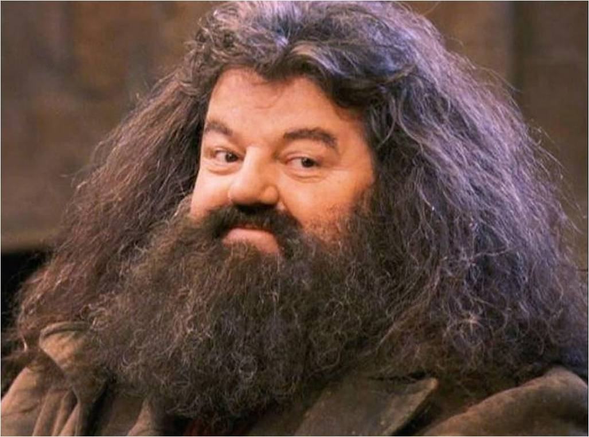
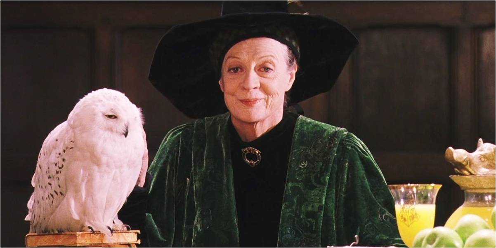
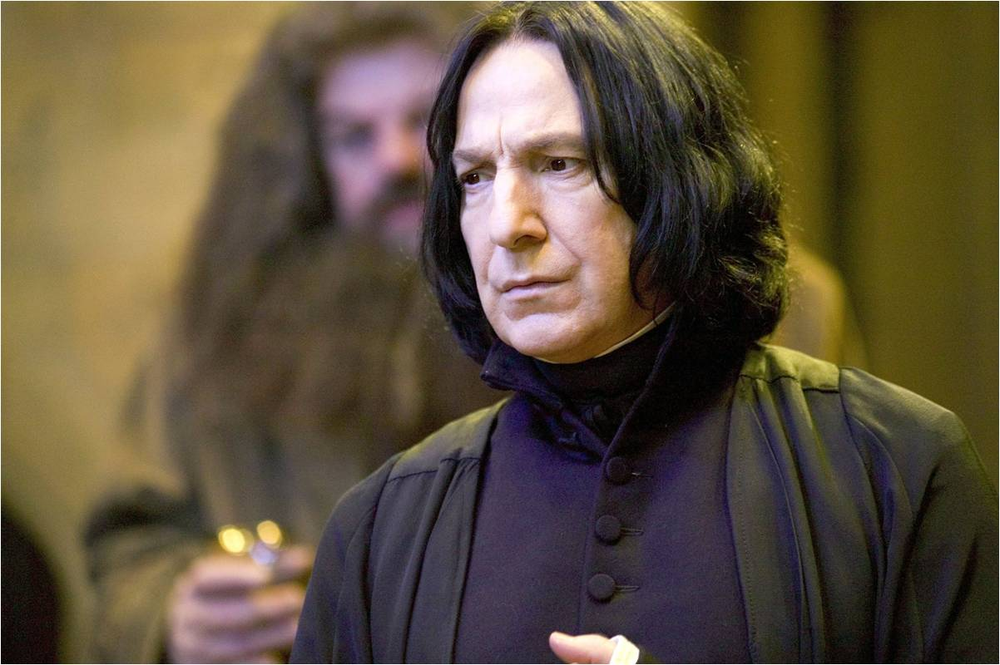

Harry Potter
He is an orphan whom Rowling imagined as a "scrawny, black-haired,
green eyed and bespectacled boy who didn't know he was a wizard."
She developed the series' story and characters to explain how
Harry came to be in this situation and how his life unfolded from
there. Apart from the first chapter, the events of this book take
place just before and in the year following Harry's eleventh
birthday. Voldemort's attack left a lightning bolt-shaped scar on
Harry's forehead, which produces stabbing pains whenever Voldemort
is present. Harry has a natural talent for Quidditch and became
the first person in a century to get on their team in their first
year.

Ron Weasley
He is Harry's age and Rowling describes him as the ultimate best
friend "always there when you need him." He is freckled,
red-haired and quite tall. He grew up in a fairly large pure-blood
family as the sixth born of seven children. Although his family is
quite poor, they still live comfortably and happily. His loyalty
and bravery in the face of a game of Wizards Chess plays a vital
part in finding the Philosopher's Stone.

Hermione Granger
She is the daughter of an all-Muggle family, is a bossy girl who
has apparently memorised most of the textbooks before the start of
term. Rowling described Hermione as a "very logical, upright and
good" character with "a lot of insecurity and a great fear of
failure beneath her swottiness". Despite her nagging efforts to
keep Harry and Ron out of trouble, she becomes a close friend of
the two boys after they save her from a troll and her magical and
analytical skills play an important role in finding the
Philosopher's Stone. She has bushy brown hair and rather large
front teeth.

Rubeus Hagrid
He is a half-giant nearly 12 feet (3.7 m) tall, with tangled black
hair and beard, was expelled from Hogwarts and his wand was
snapped in half (resulting in him never to use a wand again),
however Professor Dumbledore let him stay on as the school's
gamekeeper, a job which enables him to give lavish affection, care
and even pet names (such as Norbert the dragon) on even the most
dangerous of magical creatures. Hagrid is fiercely loyal to
Dumbledore and quickly becomes a close friend of Harry, Ron and,
later, Hermione, but his carelessness makes him unreliable.

Professor Albus Percival Wulfric Brian Dumbledore
He is a tall, thin man who wears half-moon spectacles and has
silver hair and a beard that tucks into his belt, is the
headmaster of Hogwarts, and thought to be the only wizard
Voldemort fears. Dumbledore, while renowned for his achievements
in magic, shrugs off praise, though he is aware of his own
brilliance. Rowling described him as the "epitome of goodness".

Professor Minerva McGonagall
She is a tall, severe-looking woman with black hair tied in a tight bun and teaches Transfiguration. She is Deputy Headmistress, and Head of Gryffindor House. McGonagall is considered to be a formidable witch who is skilled in many forms of magic, notably transfiguration and spell-casting. She is able to perform certain magic without casting spells or sometimes without the use of a wand. McGonagall is a registered Animagus and can transform herself into a tabby cat at will. McGonagall was always held in high respect by her peers and students at Hogwarts and commanded a position second only to Dumbledore.

Professor Severus Snape
He has a hooked nose, sallow complexion and greasy black hair, teaches Potions, but would prefer to teach Defence Against the Dark Arts. Snape favours pupils in Slytherin, his own House and seizes every opportunity to humiliate others, especially Harry. Several incidents, beginning with the shooting pain in Harry's scar during the start-of-term feast, lead Harry and his friends to think Snape is aiding Voldemort.

Draco Malfoy
He is a slim, pale boy who speaks in a bored drawl. He is arrogant about his skill in Quidditch, and despises anyone who is not a pure-blood wizard and wizards who do not share his views. His parents had supported Voldemort, but changed sides after the dark wizard's disappearance, claiming they had been bewitched. Draco avoids direct confrontations and tries to get Harry and his friends into trouble.
Vernon Dursley
Vernon Dursley, the husband of Petunia Dursley, is a heavily built man whose irascible bluster covers a narrow mind and a fear of anything unusual.
Petunia Dursley
Petunia Dursley, the sister of Harry's mother Lily, is a thin woman with a long neck that she uses for spying on the neighbours. As a muggle, she regards her magical sister as a freak and tries to pretend that she never existed.
Dudley Dursley
Dudley Dursley is an overweight, spoilt bully and Harry's cousin.
Professor Quirrell
He is a twitching, stammering and nervous man who teaches Defence Against the Dark Arts. Reputedly he was a brilliant scholar, but his nerve was shattered by an encounter with vampires. Quirrell wears a turban to conceal the fact that he is voluntarily possessed by Voldemort, whose face appears on the back of Quirrell's head.
Other members of staff include: the dumpy Herbology teacher and Head of Hufflepuff House Professor Sprout, Professor Flitwick, the tiny and excitable Charms teacher and Head of Ravenclaw House, the soporific History of Magic teacher, Professor Binns, a ghost who does not seem to have noticed his own death, and Madam Hooch, the Quidditch coach, who is strict, but a considerate and methodical teacher. The poltergeist Peeves wanders around the castle causing trouble wherever he can.
In the book, Rowling introduces an eclectic cast of characters. The first character to be introduced is Vernon Dursley, Harry's uncle. Most of the actions centre on the eponymous hero Harry Potter, an orphan who escapes his miserable childhood with the Dursley family. Rowling imagined him as a "scrawny, black-haired, bespectacled boy who didn't know he was a wizard" and says she transferred part of her pain about losing her mother to him. During the book, Harry makes two close friends, Ronald Weasley and Hermione Granger. Ron is described by Rowling as the ultimate best friend, "always there when you need him". Rowling has described Hermione as a "very logical, upright and good" character with "a lot of insecurity and a great fear of failure beneath her swottiness".
Rowling also imagined a supporting cast of adults. The headmaster of Hogwarts is the powerful, but kind wizard Albus Dumbledore, who becomes Harry's confidant. Rowling described him as "the epitome of goodness". His right hand is severe Minerva McGonagall, the friendly half-giant Rubeus Hagrid, who saved Harry from the Dursley family and the sinister Severus Snape. Professor Quirrell is also featured in the novel.
The main antagonists are Draco Malfoy, an elitist, bullying classmate, and Lord Voldemort, the most powerful evil wizard who becomes disembodied when he tries to kill baby Harry. According to a 1999 interview with Rowling, the character of Voldemort was created as a literary foil for Harry and his backstory was intentionally not fleshed-out at first:
The basic idea... Harry, I saw Harry very very very clearly. Very vividly. And I knew he didn't know he was a wizard. ... And so then I kind of worked backwards from that position to find out how that could be, that he wouldn't know what he was. ... When he was one year old, the most evil wizard for hundreds and hundreds of years attempted to kill him. He killed Harry's parents, and then he tried to kill Harry—he tried to curse him. ... And—so—but for some mysterious reason, the curse didn't work on Harry. So he's left with this lightning bolt shaped scar on his forehead and the curse rebounded upon the evil wizard, who has been in hiding ever since.
.png)